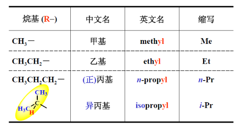
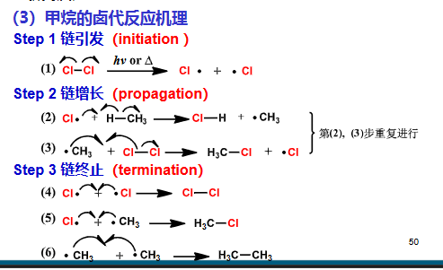
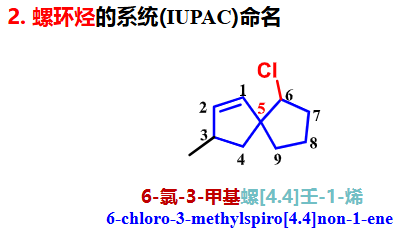
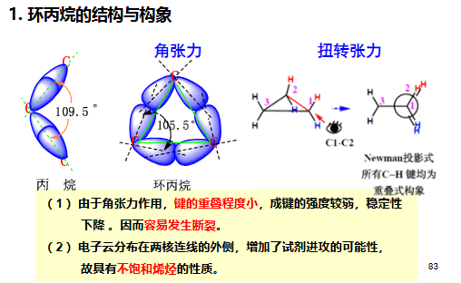
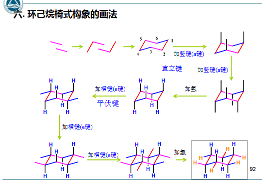

第二章 烷烃和环烷烃
章节概览
- 2.1 烷烃的通式、同系列与同分异构体（构造异构）
- 2.2 伯、仲、叔、季碳原子与氢原子的分类
- 2.3 烷烃的命名（普通命名法与系统命名法 IUPAC）
- 2.4 烷烃的结构与构象（ 杂化、Newman 投影式、乙烷/丁烷构象）
- 2.5 烷烃的物理性质（状态、沸点、熔点、密度、溶解度规律）
- 2.6 烷烃的化学性质（氧化、裂化、自由基卤代反应及机理、选择性）
- 2.7 环烷烃的分类与命名（单环、螺环、桥环）
- 2.8 环烷烃的结构与张力理论（Baeyer 学说、角张力、扭转张力、空间位阻）
- 2.9 环己烷的构象（椅式、半椅式、船式、扭船式、a/e 键、转环、十氢萘）
- 2.10 环烷烃的物理与化学性质（自由基取代、小环开环加成）
学习目标（重点）
- 理解同系列、同系物、系列差的概念，掌握碳链异构的书写方法
- 掌握伯、仲、叔、季碳（氢）的概念及判断方法
- 熟练掌握链状烷烃的系统命名法（选主链、编号、书写、复杂支链）
- 理解 杂化，掌握 Newman 投影式及构象稳定性判断
- 掌握烷烃物理性质随碳原子数的变化规律
- 掌握烷烃自由基卤代反应机理（链引发/增长/终止）、能线图与决速步骤
- 掌握不同类型氢的相对活性顺序及氯代/溴代选择性的差异与解释
- 掌握环烷烃的命名规则（单环、螺环、桥环）
- 理解 Baeyer 张力学说及其缺陷，掌握三类张力的影响因素
- 掌握环己烷椅式构象、a/e 键、转环效应与取代环己烷的优势构象
- 理解小环的开环加成反应及马氏规则
一、烷烃的通式、同系列与同分异构体
参考资料：有机化学2 烷烃和环烷烃-1.pdf | 有机化学2 烷烃和环烷烃-2.pdf | 有机化学2 烷烃和环烷烃-3.pdf
1.1 烃的概念与烷烃通式
- 烃 (hydrocarbon)：只含碳、氢两种元素的有机化合物，称碳氢化合物，简称烃。“烃”取碳中之”火”、氢中之”𢀖“组合而成。
- 烷烃 (alkane)：碳原子间均以单键相连、碳的其余价键被氢饱和的烃，又称饱和烃 (saturated hydrocarbon)。
- 通式：，例如 、、、。烷烃中碳的化合价完全被氢满足，故”烷”即”完全饱和”之意。
1.2 同系列与同系物
| 术语 | 定义 |
|---|---|
| 同系列 (homologous series) | 具有相同通式、结构上相差一定”原子团”的一系列化合物 |
| 同系物 (homologs) | 同系列中的各个化合物互为同系物 |
| 系列差（系差） | 相邻同系物间相差的 原子团 |
同系物的意义
同系物化学性质相似，物理性质随碳原子数增加呈规律性变化。这使我们可以”由一个推及一类”，是有机化学建立系统性的基础。
1.3 同分异构现象
- 同分异构 (isomerism)：分子式相同而结构不同的化合物称为同分异构体。
- 构造 (constitution)：分子中原子相互连接的顺序和方式。
- 构造异构（碳链异构, skeletal isomerism）：分子中碳原子排列方式不同引起的异构。
(1) 异构体数目随碳数增长
| 分子式 | 异构体数 |
|---|---|
| 0（无异构） | |
| 2 | |
| 3 | |
| 5 | |
| 366,319 |
关键区别
构造异构 = 原子连接顺序不同（需断裂化学键才能转化） 构象异构 = 原子连接顺序相同，仅空间排列不同（通过单键旋转即可转化）
(2) 构造异构体的书写方法
以己烷 的五种异构体为例：
- 先写出直链异构体（保持四价碳，不够补氢）；
- 从端基砍下一个碳，分别接到不同位置的碳原子上；
- 继续砍下一个碳，进行组合（注意避免重复）。
最终可写出：正己烷、2-甲基戊烷、3-甲基戊烷、2,2-二甲基丁烷、2,3-二甲基丁烷。
二、伯仲叔季碳原子
| 类型 | 符号 | 定义 | 对应氢 | 英文名称 |
|---|---|---|---|---|
| 伯碳 | 与另外 1 个 相连 | 伯氢 | primary carbon | |
| 仲碳 | 与另外 2 个 相连 | 仲氢 | secondary carbon | |
| 叔碳 | 与另外 3 个 相连 | 叔氢 | tertiary carbon | |
| 季碳 | 与另外 4 个 相连 | 无氢 | quaternary carbon |
记忆技巧
伯 = 1（连接 1 个 ）、仲 = 2、叔 = 3、季 = 4。季碳因价键已全部用于连接碳，故不含氢。
概念的扩展
该分级方式可推广至自由基、碳正离子、碳负离子等中间体：
- 伯自由基 、仲自由基 、叔自由基
- 伯碳负离子 、叔碳正离子
中间体的稳定性与所连碳原子的级数密切相关（见烷烃自由基取代一节）。
三、烷烃的命名
详细命名规则参见 命名
3.1 命名法的分类
| 命名法 | 适用 | 说明 |
|---|---|---|
| 普通命名法（习惯命名法/俗名） | 简单化合物 | 词头 + 碳原子数目 + 烷 |
| 系统命名法（IUPAC 命名法） | 所有化合物 | IUPAC：国际纯粹与应用化学联合会 (International Union of Pure and Applied Chemistry) |
| 中文系统命名法 | 所有化合物 | 中国化学会 (CCS) 根据 IUPAC 原则结合汉字特点制定，2017 版与英文规则一致 |
3.2 普通命名法
词头：区分碳链异构体
- 正 (normal, n-)：直链化合物
- 异 (iso, i-)：由链端开始第二个碳上连有一个甲基
- 新 (neo)：由链端开始第二个碳上连有两个甲基
碳原子数目：
- 1~10 个碳：天干命名 → 甲、乙、丙、丁、戊、己、庚、辛、壬、癸
- 11 个及以上：大写数字命名 → 十一、十二……
英文词根：meth-、eth-、prop-、but-、pent-、hex-、hept-、oct-、non-、dec-，词尾加 -ane。
普通命名举例
- 正丁烷 (n-butane)
- 异丁烷 (isobutane)
- 新戊烷 (neopentane)
3.3 系统命名法
(1) 直链烷烃
与普通命名法基本相同，“某烷”前面不需加”正”字。例如丁烷 butane、戊烷 pentane、十二烷 dodecane。
(2) 支链烷烃——常见烷基
支链烷烃看作直链烷烃的取代衍生物，把支链作为取代基（称烷基），名称中包括母体和取代基两部分，取代基部分在前，母体部分在后。
烷基通式 ，常以 表示。例如 3-甲基己烷 (3-methylhexane)。


(3) 命名步骤
① 选主链
选主链规则
- 选取最长碳链为主链，称”某烷”，其它支链作为取代基
- 当几条碳链等长时，选择取代基（支链）最多的链为主链
② 编号
编号规则（最低位次原则，不做加法，依次比较）
- 从靠近取代基一端开始编号，使取代基位次最小（依次比较，小的优先）
- 有选择余地时，使英文首字母排前的取代基编号较小（非斜体）
- 若首字母相同，则依次往后进行比较
常见烷基在系统命名中的先后次序：丁基 (butyl) > 乙基 (ethyl) > 异丙基 (isopropyl) > 甲基 (methyl) > 戊基 (pentyl) > 丙基 (propyl)
易错点
编号比较是逐位比较取小，而不是把位次相加后比较总和。例如 2,3 优于 4,5；3,4,6 优于 3,5,6。
③ 书写名称
书写规则
- 取代基写在前面，母体在后面
- 取代基位次用阿拉伯数字表示，写在取代基名称前面
- 如有几种取代基，表示取代基位次的阿拉伯数字之间应加一个逗号
- 有几个相同的取代基时，将其名称合并在一起，数目用汉字表示（二 di、三 tri、四 tetra、五 penta），写在该取代基的名称和位次之间
- 阿拉伯数字与汉字之间应加一短线
命名实例
- 2,4-二甲基己烷 (2,4-dimethylhexane)
- 8-乙基-2-甲基-7-丙基癸烷 (8-ethyl-2-methyl-7-propyldecane)
- 3-氯-5-甲基庚烷 (3-chloro-5-methylheptane)
卤原子作为取代基的命名： 氟 fluoro-、 氯 chloro-、 溴 bromo-、 碘 iodo-
(4) 复杂支链的命名
支链命名规则
复杂支链是指支链上还有取代基的烷基。命名时：
- 首先找出包含连接点碳原子的最长碳链（取代基的主链），编号时使连接点的位次尽可能小，再命名它所有的取代基
- 连接点的位次用阿拉伯数字表示，写在”基”之前，阿拉伯数字与汉字之间加短线”-”
- 如果连接点位次在 1 位，数字”1”一般省略

复杂支链实例
- 2-甲基丁基 (2-methylbutyl)
- 2,3-二甲基丁-2-基 (2,3-dimethylbutan-2-yl)
- 6-(2,3-二甲基丁-2-基)-3-甲基癸烷 (6-(2,3-dimethylbutan-2-yl)-3-methyldecane)
四、烷烃的结构与构象
4.1 碳原子的 杂化
碳核外电子排布：。基态经跃迁至激发态后发生 杂化，形成 4 个等性 杂化轨道。
杂化轨道特点：
- 形状：一头大，一头小
- 成分：每个轨道含 和 成分
- 易于成键：轨道重叠程度大于单纯 s 或 p 轨道
- 键角：等性杂化，各轨道间夹角均为 （）
甲烷与乙烷的结构参数
- 甲烷：4 个 键（），键长 ，键角
- 乙烷： 键（）键长 ， 键（）键长 ，
- 烷烃中所有键均为 键，已饱和，不能加成。
4.2 构象的基本概念
- 构象 (conformation)：有机分子通过 键自由旋转而产生的不同空间形象。
- 构象异构体 (conformational isomer, conformer)：由构象不同形成的异构体。
4.3 立体结构的描述形式
相关内容参见 立体化学
| 形式 | 观察方式 | 特点 |
|---|---|---|
| 伞形式（透视式） | 从斜侧面看分子模型 | 直观展示空间结构 |
| 锯架式 (sawhorse) | 从斜侧面看分子模型 | 展示 键及取代基位置 |
| Newman 投影式 | 从碳碳键轴的延长线上观察 | 便于研究构象稳定性 |
(1) 乙烷的构象
构象有无数种，主要研究典型位置：重叠式 (eclipsed)、交叉式 (staggered)、扭曲式 (skew)。
| 构象类型 | 特点 | 稳定性 |
|---|---|---|
| 交叉式 | 原子间距离最远，内能较低 | 最稳定 |
| 扭曲式 | 介于交叉和重叠之间，有无数个 | 中等 |
| 重叠式 | 键电子云排斥、范德华排斥力，内能较高 | 最不稳定 |
势能分析
分子由一个交叉式转到另一个交叉式需经过能量较高的重叠式，亦称能垒。因此碳碳单键的旋转并非完全自由。能垒来源：
- 电子云排斥（ 键与 键之间）
- 相邻两 间的范德华排斥力
乙烷的旋转能垒约为 ，旋转中须克服能垒——即扭转张力。
(2) 丁烷的构象
围绕 键旋转，可得典型构象：对位交叉 (anti)、邻位交叉 (gauche)、部分重叠、全重叠。
稳定性顺序
对位交叉 > 邻位交叉 > 部分重叠 > 全重叠
邻位交叉的 1,3-张力
邻位交叉式中两个甲基间的二面角为 ，存在一定的空间排斥（gauche interaction，约 ），但对位交叉式中两甲基相距最远，故最稳定。这一”大基团优先处于对位交叉”的规律是构象分析的基础。
五、烷烃的物理性质
有机化合物的物理性质取决于其结构和分子间作用力；物理性质是鉴定有机物的依据，也反映同系物的变化规律。
| 性质 | 规律 | 说明 |
|---|---|---|
| 状态 | 气体； 液体； 固体 | 室温常压 |
| 沸点 (b.p.) | 直链烷烃随碳原子数增加而升高；同碳数时含支链越多，沸点越低 | 取决于分子间作用力（色散力） |
| 熔点 (m.p.) | 直链烷烃随分子量增加而升高；分子越对称，熔点越高 | 对称性高 → 晶格能大 |
| 密度 (d) | 均 （小于水）；碳原子数增多，密度增大 | 非极性分子，密度小 |
| 溶解度 | 相似相溶；非极性，易溶于低极性有机溶剂，不溶于水 | 烷烃常作低极性溶剂（正己烷、石油醚） |
沸点的支链效应
同碳数烷烃的沸点：直链 > 单支链 > 多支链。因为支链使分子形状趋于球状、表面积减小，分子间接触面积减小，色散力减弱。
熔点的对称性效应
熔点不仅取决于分子量，还取决于晶格能。例如新戊烷 () 因高度对称，熔点 () 显著高于异戊烷 () 和正戊烷 ()。偶数碳烷烃的熔点通常比相邻奇数碳高（锯齿形规律），因偶数碳链在晶格中排列更紧密。
六、烷烃的化学性质
6.1 烷烃的结构与化学惰性
烷烃为 键分子， 杂化，已饱和不能加成； 键低极性、 酸性小，不易被置换。常见键能：、、、。
一般情况下烷烃化学性质不活泼、耐酸碱，常用作低极性溶剂（正己烷、正戊烷、石油醚）。烷烃最重要的反应是与卤素发生的自由基取代反应。
6.2 氧化反应 氧化
(1) 燃烧（完全氧化）
燃烧热 (heat of combustion)：标准状态下，1 mol 烷烃完全燃烧放出的热量。例如异丁烷 () 比正丁烷 () 放热少，说明异丁烷更稳定（支链越多越稳定）。汽油、柴油（不同碳链的烷烃混合物）作为燃料即基于此原理。
(2) 部分氧化（控制氧化） 控温
适当条件下可部分氧化为醇、醛、酮、羧酸等含氧化合物：
| 反应物 | 反应式 | 产物 |
|---|---|---|
| 甲烷 | 甲醇、甲醛 | |
| 石蜡 | 高级脂肪酸（制肥皂原料） |
6.3 热裂反应（裂化与裂解） 控温
在高温下使烷烃分子发生裂解的过程称为裂化 (cracking)；在催化剂存在下的裂化叫催化裂化 (catalytic cracking)。裂化后得到较低级的烷烃，也含烯烃和氢。
6.4 取代反应（自由基取代） 取代
(1) 反应类型
烷烃可与 、、 等发生取代，生成烷基磺酸、烷基硝化物、烷基卤代物。其中卤代反应最重要。
| 试剂 | 反应式 | 条件 |
|---|---|---|
| 加热 | ||
| 加热 | ||
| 卤素 | 光照或加热 |
(2) 卤素的反应活性
（ 几乎不反应）：
| 卤素 | 反应情况 |
|---|---|
| 反应过分剧烈，较难控制 | |
| 常温下可发生反应（主要讨论） | |
| 稍慢，加热下可发生反应（主要讨论） | |
| 反应难进行，需加适当氧化剂方可 |
(3) 甲烷的氯代反应
反应条件不同，产物不同：
- 不加控制时：得到一氯、二氯、三氯、四氯代物的混合物
- 甲烷过量：主要产物为 （麻醉剂、溶剂）
- 大大过量：主要产物为 （溶剂、灭火剂）
(4) 反应机理（自由基链反应, free radical chain reaction）
反应机理 (reaction mechanism)：对反应过程的详细描述，应解释：反应如何开始、反应条件的作用、产物生成的合理途径、决速步骤、经过的中间体、副产物生成。机理是综合实验事实后提出的理论假说。
甲烷氯代的实验现象：光照或加热下才反应；先光照甲烷再与氯气混合则不反应；先光照氯气再与甲烷混合则反应；反应有延迟；生成多种氯代物并有少量乙烷；体系加氧会推迟反应；吸收一个光子可产生几千个 （链反应特征）。

机理要点
Step 1 链引发 (initiation)：卤素分子在光照或加热下均裂产生自由基
Step 2 链增长 (propagation) 第一步（ 夺氢）活化能较高，是决速步骤 (rate-determining step)；生成的 继续参加新一轮循环，自由基中间体不断再生。
Step 3 链终止 (termination)：自由基互相结合而消失 （少量乙烷的来源）
有效碰撞与无效碰撞
- 有效碰撞：产生新的自由基，使链增长（如 ）
- 无效碰撞：自由基消失或净结果为零（如 ）
(5) 过渡态理论与能量变化
过渡态理论：反应物相互接近时，先达到一势能最高点（活化能 ，相应结构称过渡态），再转变为产物。
- 过渡态 (transition state)：势能最高处的原子排列，寿命为 0，无法直接测得。
- 中间体 (intermediate)：反应中生成的寿命较短的分子、离子或自由基，活泼但可实验观察。
甲烷氯代势能变化：决速步骤（）具有最高活化能 ；第二步 活化能 较小、反应快。
活化能与反应热
- （活化能）决定反应速率
- （反应热）体现反应的趋势与激烈程度
(6) 氯代与溴代的速率差异
氯代决速步活化能约 （放热），溴代约 （吸热）。溴代活化能高得多，故反应速率慢、但选择性更好。
(7) 不同类型氢的选择性 (selectivity)
问题：对不同类型氢的反应活性如何？不同卤素的选择性如何？
以丙烷氯代为例：6 个等价伯氢、2 个等价仲氢，若氢活性相同则一氯代产物比例应为 ，实际为 ，说明活性不同。
仲氢相对活性 ，伯氢相对活性 。
| 反应 | 选择性比例 | 说明 |
|---|---|---|
| 氯代 () | 选择性较差 | |
| 溴代 () | 选择性极好 |
选择性规律
- 氢原子反应活性：（温度升高，选择性变差）控温
- 卤素选择性：溴代 > 氯代
- 合成应用：溴代 > 氯代（选择性好，可得较高纯度产物）
(8) 自由基稳定性与选择性的解释
考虑决速步骤 ，自由基生成的相对速率决定反应的选择性。
键离解能 (bond dissociation energy) 越小，自由基越易生成、越稳定：
| 自由基 | 类型 | 相对稳定性 |
|---|---|---|
| 叔 | 最易生成，最稳定 | |
| 仲 | 中等 | |
| 伯 | 较难生成 | |
| 甲基 | 最难生成 |
稳定性顺序
主要由 超共轭效应（ 键与自由基碳的 p 轨道重叠）解释：与自由基碳相连的 键越多，超共轭越强，自由基越稳定。
(9) Hammond 假说与氯/溴选择性差异
Hammond 过渡态结构假说：在简单的基元反应中，过渡态的结构与能量更接近反应物或产物中能量较高的一边。
- 氯代（放热反应）：过渡态很快到达，结构接近反应物（烷烃），不同类型氢的差别小 → 选择性差
- 溴代（吸热反应）：过渡态到达较晚，结构接近产物（自由基），自由基稳定性差异被放大 → 选择性好
选择性总结
如同时可发生多个反应，各自活化能相差越大，反应选择性越好，反之越差。这就是溴代选择性远高于氯代的根本原因。
与生工的联系：自由基与生物体系
自由基链反应与生物体内的氧化应激密切相关：活性氧（ROS，如 、）可引发脂质的过氧化链反应，破坏生物膜磷脂中的多不饱和脂肪酸侧链，是衰老、炎症和多种疾病的分子基础。体内的超氧化物歧化酶 (SOD)、维生素 E 等抗氧化体系正是通过”捕获”自由基来终止链反应。
七、环烷烃的分类与命名
7.1 脂环烃与环烷烃
- 脂环烃 (alicyclic hydrocarbons)：碳原子连接成环，其性质与开链脂肪烃相似的碳环烃。
- 单环烷烃比相应的开链烷烃少一对氢原子，通式 （与烯烃互为同分异构）。
7.2 单环环烷烃的系统命名
命名规则
- 根据环碳原子总数称”环某烷""环某烯”或”环某炔”（如环己烷 cyclohexane）
- 环上有取代基时，应使取代基位次最小
- 遇到重键时，使重键的位次尽可能小（双键在 1,2 位）
- 环和侧链并存时（不含官能团化合物）：
- 环上碳原子数比侧链少 → 以开链烷烃为母体（如 3-环丁基戊烷）
- 碳链连有多个环 → 以开链烷烃为母体
- 其余情况 → 优先选择环为母体
- 两个环并存 → 优先选择大环为母体（如环丙基环己烷以环己烷为母体）
单环命名实例
- 1-乙基-4-甲基环己烷 (1-ethyl-4-methylcyclohexane)
- 4-乙基-1,1-二甲基环己烷 (4-ethyl-1,1-dimethylcyclohexane)
- 4-乙基环戊烯 (4-ethylcyclopent-1-ene)
- 1-乙基-4,4-二甲基环己烯 (1-ethyl-4,4-dimethylcyclohex-1-ene)
7.3 螺环化合物
螺环定义
螺环烃 (spiro compound)：单环之间共用一个碳原子（螺原子, spiro atom）的多环烃。
命名规则
- 根据螺环上碳原子总数称”螺某烷""螺某烯”或”螺某炔”
- 螺字后面的方括号内用阿拉伯数字写出除螺原子外每个环的碳原子数（从小到大），数字间用圆点隔开
- 编号：从螺原子旁的小环开始顺序编号，由第一个环顺序编到第二个环；如有不饱和键或取代基，应使其位次最小
- 写出取代基的个数、位次、名称，并标明母体结构

螺环命名实例
6-氯-3-甲基螺[4.4]壬-1-烯 (6-chloro-3-methylspiro[4.4]non-1-ene)
7.4 桥环化合物
桥环定义
桥环烃 (bridged hydrocarbon)：共用两个或两个以上碳原子的多环化合物。共用的碳原子为桥头碳 (bridgehead)，桥头碳之间的碳链或键称为桥 (bridge)。
命名规则
- 确定环数：将环状变成链状所需断开的最少 键数目。断两次为二环 (bicyclo)，断三次为三环等
- 母体：根据桥环上碳原子总数称”二环某烷”
- 方括号内写出除桥头碳外每条桥上的碳原子数（从大到小），数字间用圆点隔开
- 编号：从一个桥头碳开始，沿最长的桥编到第二个桥头碳，再沿次长桥回到第一个桥头碳，再依次编号最短桥；有选择时使取代基位号最小
- 写出取代基的个数、位次、名称，并标明母体结构

桥环命名实例
- 十氢萘 = 二环[4.4.0]癸烷 (bicyclo[4.4.0]decane)
- 二环[2.2.1]庚烷 (bicyclo[2.2.1]heptane，即降冰片烷)
- 2,7,7-三甲基二环[2.2.1]庚烷 (2,7,7-trimethylbicyclo[2.2.1]heptane，即莰烷)
- 7,7-二甲基二环[2.2.1]庚-2-烯 (7,7-dimethylbicyclo[2.2.1]hept-2-ene)
八、环烷烃的结构与张力理论
8.1 Baeyer 张力学说
Baeyer 张力学说（1885）
假设环烷烃为平面结构，当碳原子的键角偏离 时，便会产生一种恢复正常键角的力量，称为角张力 (angle strain)。按此理论，五元环（键角 ）应最稳定，偏离 越远越不稳定。
Baeyer 学说的缺陷
从偏转角度看五元环应最稳定，但实际五元、六元及更大的环都是稳定的。原因是环烷烃（三元环除外）并非平面结构：大环通过折叠使键角接近 ，从而消除角张力。Baeyer 学说只对小环（环丙烷、环丁烷）适用。
8.2 影响构象稳定性的三类张力
| 张力类型 | 定义 | 倾向 |
|---|---|---|
| 角张力 (angle strain) | 键角偏离成键轨道角度（ 碳 ） | 倾向于恢复 |
| 扭转张力 (torsional strain) | 相连两个 碳倾向于成交叉式、键电子云斥力最小 | 二面角倾向 |
| 空间位阻 (steric strain) | 非成键原子/基团大小、极性、距离的影响 | 范德华张力尽可能小 |
8.3 各环烷烃的结构
(1) 环丙烷

环丙烷特点
- 角张力：键角约 （实际 约 几何构型）， 键重叠程度小，成键强度弱，稳定性下降，易断裂
- 扭转张力：所有 键均处于重叠式
- 电子云分布在两核连线的外侧（弯曲键/香蕉键），增加试剂进攻可能性，故具有类似烯烃的不饱和性质
因此环丙烷化学性质活泼，易发生开环加成。
(2) 环丁烷
与环丙烷相似存在张力，但较环丙烷稳定。分子采取蝴蝶型 (butterfly) 折叠构象以部分减小张力。
(3) 环戊烷
碳碳键夹角 ，接近 正常键角，无显著角张力。采取信封式 (envelope) 构象以消除扭转张力，碳环十分稳定。
稳定性总结
- 小环（环丙烷、环丁烷）：张力大，活泼，性质似烯烃
- 普通环（环戊烷及以上）：稳定，性质似烷烃
- 环己烷：椅式构象无任何张力，最稳定
九、环己烷的构象
9.1 平面结构的不可行性
若环己烷 6 个碳原子同处一平面：将同时存在角张力（偏离 ）、扭转张力（ 键全重叠）、范德华力（相邻碳氢过近），不稳定。故环己烷采取非平面的折叠构象。
9.2 构象类型
| 构象 | 特点 | 稳定性 |
|---|---|---|
| 椅式 (chair) | 无角张力、无扭转张力、无范德华力；相邻 均为交叉式； 距离均 （范德华半径之和） | 最稳定 |
| 半椅式 (half-chair) | 5 个碳在同一平面，有角张力和较大扭转张力 | 不稳定（过渡态） |
| 船式 (boat) | 无角张力，但有扭转张力（重叠式）和旗杆氢导致的跨环张力 () | 不稳定 |
| 扭船式 (twist-boat) | 船式扭曲后，旗杆氢远离，呈半交叉式 | 中等稳定 |
构象转换与势能图
椅式 半椅式（过渡态，能垒最高） 扭船式 船式 扭船式 半椅式 另一椅式。椅式势能最低，半椅式最高。室温下环己烷分子在两个椅式构象间快速翻转。
9.3 直立键与平伏键
- a 键 (axial, 直立键)：平行于环的对称轴、近似垂直于环平均平面
- e 键 (equatorial, 平伏键)：近似平行于环平面、向外伸展

翻环效应（环翻转, ring flip）
椅式构象经翻转后，a 键变成 e 键，e 键变成 a 键，但取代基的”上/下”相对取向不变。这是构象分析的核心操作。
9.4 取代环己烷的构象分析
环己烷衍生物的优势构象原则
- 尽可能多的基团处于 e 键
- 较大基团优先处于 e 键
| 取代类型 | 规则 | 原因 |
|---|---|---|
| 一取代 | 取代基优先占据 e 键 | a 键上有 1,3-二直立相互作用 (1,3-diaxial interaction)，位阻大 |
| 二取代 | 大取代基优先占据 e 键 | 减小 1,3-二直立相互作用 |
| 多取代 | 使最多基团尤其是大基团处于 e 键 | 综合考虑各 1,3-张力 |
构象分析实例
甲基环己烷中，甲基处于 e 键的构象比 a 键稳定约 （相当于一个 1,3-二直立相互作用的能量），室温下 e 键构象约占 95%。叔丁基等大基团几乎”锁定”在 e 键，常用作构象固定剂。
9.5 取代基的顺反关系与构象
环己烷环上取代基的顺式/反式是构造性质，不随翻环改变；而a/e 取向随翻环而互换。
- 顺-1,2-二取代：必为一个 a 键、一个 e 键（翻环后 a↔e，仍为顺式）
- 反-1,2-二取代：ee 或 aa（翻环后互换），ee 构象稳定
- 反-1,3-二取代：ae
- 顺-1,3-二取代：ee（优势构象）或 aa
- 顺-1,4-二取代：ae
- 反-1,4-二取代：ee 或 aa，ee 优势
9.6 十氢萘的顺反构象
十氢萘 (decalin)
十氢萘即二环[4.4.0]癸烷，由两个环己烷椅式构象稠合而成，有顺、反两种异构体：
- 反十氢萘：两个氢位于环两侧，两个环均为椅式且以 ee 键稠合，无跨环张力，更稳定
- 顺十氢萘：两个氢位于环同侧，以 ea 键稠合，有一个桥头氢处于 a 键，能量较高
反十氢萘比顺十氢萘稳定约 。
9.7 构象分析与生工联系
与生工的联系：环己烷椅式构象是糖类构象的基石
吡喃糖椅式构象：六元环糖（吡喃糖，pyranose）的环结构与环己烷同构，采用椅式构象。D-葡萄糖的优势构象为 椅式：所有大基团（、）均处于 e 键，因而特别稳定——这正是 D-葡萄糖在自然界中含量最丰富的构象原因。理解环己烷 a/e 键是掌握糖类构象（ 异头物、 与 椅式）的前提。
与生工的联系：甾族与萜类骨架
甾族化合物（sterol，如胆固醇、胆酸、甾体激素） 的碳骨架由三个六元环和一个五元环稠合而成（环戊烷并全氢菲，A/B/C/D 环），其六元环均以椅式存在，环间以反式或顺式稠合。全反式稠合使甾核呈刚性平面结构，是细胞膜流动性、信号转导的结构基础。萜类（terpene） 由异戊二烯单元缩合而成，许多亦含环己烷椅式单元（如薄荷醇、樟脑）。环己烷构象分析直接铺垫了甾族与萜类的立体化学。
十、环烷烃的物理与化学性质
10.1 物理性质
- 状态：小环为气体，普通环（5~6 元）为液体，中大环为固体
- 由于环上 单键旋转受限，脂环烃分子具有一定对称性和刚性
- 沸点、熔点、相对密度均比相应的开链烷烃高
10.2 化学性质总览
性质分类
- 五元及以上环烷烃：稳定，与链烷烃性质相似（自由基取代）
- 小环（环丙烷、环丁烷）：活泼，与烯烃性质相似（开环加成）
10.3 自由基取代反应 取代 控温
五元及以上环烷烃不与氧化剂反应，在光照或高温下可与卤素发生取代：
与链烷烃的差别
环烷烃的自由基取代条件与链烷烃类似，但由于环的刚性使构象固定，选择性可能略有不同。
10.4 开环加成（小环的特殊性质） 加成
(1) 催化氢化（打开一根 键）
| 环烷烃 | 能否加氢开环 | 条件 |
|---|---|---|
| 环丙烷 | 能 | 常温常压 |
| 环丁烷 | 能 | 较高温度 |
| 环戊烷及以上 | 不能 | — |
(2) 与卤素的反应（离子型加成）
此为离子型加成（区别于自由基取代），可用以区分环丙烷与烯烃：环丙烷常温下不使溴水褪色的环戊/环己烷则不反应。
(3) 与 或 的加成
加成规律：遵循马氏规则 立体选择性
不对称环丙烷与 加成时，氢加在含氢较多的碳上，卤素加在含氢较少的碳上（生成更稳定的碳正离子中间体）。
区域选择性 (regioselectivity)：反应取向可能产生多个产物时，只生成或主要生成一种产物的现象。这与碳正离子稳定性有关。
十一、环烷烃的制备（了解）
常见制备方法
- 芳香环还原法：苯催化氢化得环己烷
- 二卤代物锌粉脱卤素：
- Diels-Alder 反应：双烯体与亲双烯体加成形成六元环
知识检查
AI 提示的修正与补充
- 决速步骤：甲烷氯代中，链增长的第一步 （氯自由基夺氢）活化能最高，是决速步骤；第二步 更快。原文”氯自由基和甲基自由基的碰撞是决速步”不准确。
- 环烷烃自由基取代：条件与链烷烃类似，但由于环的刚性使构象固定，选择性可能略有不同。
- 开环加成的机理：小环开环与 、 的反应属亲电加成（非亲核加成），遵循马氏规则；而催化氢化为加氢开环。
常见易错点
- 编号”最低位次”是逐位比较，不是相加求和
- 烷基英文次序按首字母排序，但 iso-/neo-/tert- 等前缀的处理需注意（tert 不参与排序，iso/neo 参与）
- 环己烷 a/e 键在翻环时互换，但取代基的 cis/trans 关系不变
- 溴代选择性远高于氯代（Hammond 假说），合成上多用溴代制备单一取代产物
- 环丙烷使溴水褪色是加成而非取代；与烯烃可用 区分（环丙烷不使 褪色）
相关笔记
- 命名 — 有机化合物命名规则
- 立体化学 — 立体化学系统笔记
- 立体选择性 — 区域选择性与立体选择性
- 取代 — 取代反应机理
- 加成 — 加成反应机理
- 氧化 — 氧化反应
- 控温 — 温度对反应的影响
- 卤代烃 — 卤代烷的取代与消除反应
- 不饱和烃和共轭体系 — 烯烃的制备（消除反应）
- 绪论 — 自由基反应机理
- 芳烃和芳香性 — 脂环烃与芳香烃的对比
- 生物大分子 — 糖类椅式构象与甾族骨架
整理自：课堂笔记、参考课件（有机化学2 烷烃和环烷烃-1.pdf、…-2.pdf、…-3.pdf）及权威有机化学教材